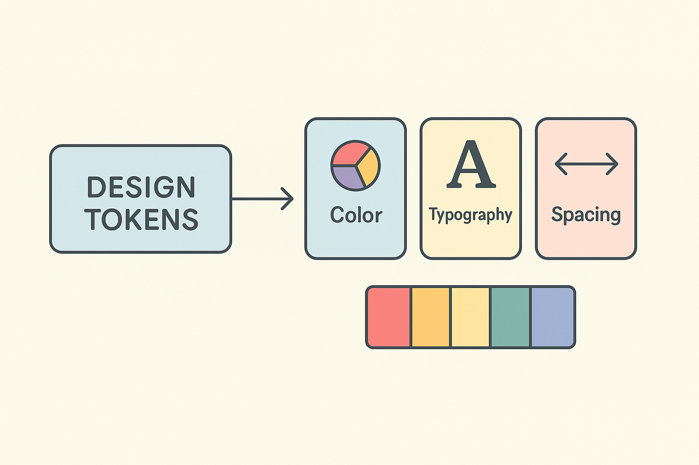

Оптимизация интерфейсов и процессов разработки
Чтобы обеспечить согласованный и производительный интерфейс, я разрабатывал наборы компонентов и дизайн‑систем, в которых используются токены для описания цветов, отступов, типографики и других визуальных параметров. Такой подход позволяет в одной точке изменять внешний вид приложения и быстро адаптировать UI под требуемые бренды.
Диаграмма демонстрирует, как токены связывают дизайн‑решения с реализацией: токены выступают в роли ключей, подставляющих конкретные значения цветов, размеров и типографики в компоненты.

Каждый компонент и токен покрыт тестами, что обеспечивает стабильность пользовательского интерфейса. Автоматизированные сборки и проверки через CI/CD гарантируют, что изменения в дизайн‑системе не приводят к регрессиям.